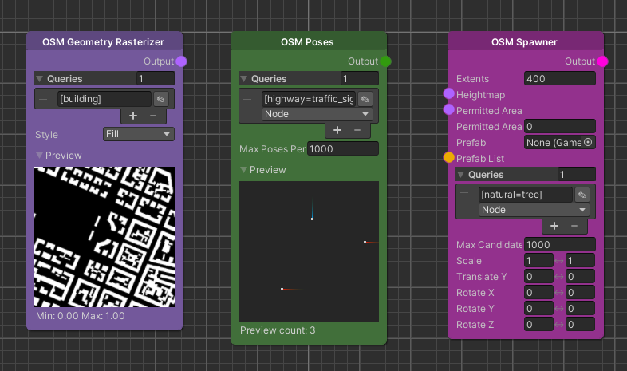
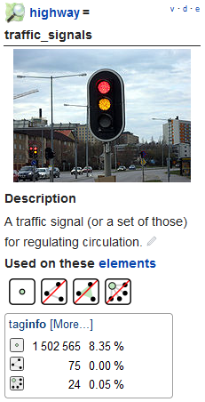
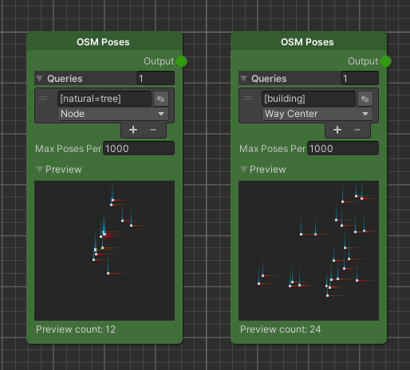
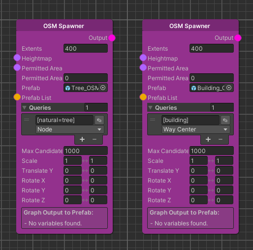
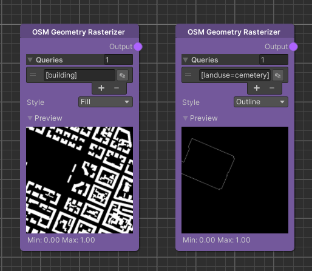

How-To: Write Map Queries
Beginner | 30 mins | Everyone
Introduction
Goal
In this guide we will learn how to write simple queries to retrieve real world object information.

Prerequisite
- Familiarity with the node graph
Learning Path
Content
Where this knowledge is used
To build more diverse and interesting environments we can use OpenStreetMap (OSM) nodes that allow us to fetch real world information. Using this information we can alter the world and add variation to it.
Every node type can interact with the OSM in their own way. For example, the map node can display areas or outlines of areas that are tagged with specific keywords. Alternatively, we can simply use poses or a spawner to add some variation.
Intro to OverpassQL
To understand how OSM based nodes and their queries work we have a quick peek behind the curtain. The server is queried using a language called OverpassQL which can get fairly complex. Luckily the ElasticSDK simplifies this to reduce writing queries to the important parts.
The following example shows how a full query might look like:
node
[highway=traffic_signals]
({{bbox}});
out;
To explore such queries we can use the website overpass-turbo and get a feeling for what they return and iterate faster to our desired result.
Going back to the query example, we have a look at the central elements of the query which we will later see in our OSM-based nodes.
The keyword node means that the query will return objects that only have a single position. Other returned objects,
such as buildings or parks, are generally represented using multiple points and are thus queried using the word way
instead of node. When unsure which keyword a certain feature uses we can always check
the OpenStreetMap wiki pages to see what we can expect.

The wiki page contains a small information box, that shows that traffic lights should be used only on nodes. In the taginfo box below we see that this is mostly correct and only a few entries are tagged incorrectly, which we can ignore.
We are now querying for single positions but still need to define what exactly we are looking for. This is done using
tag filters. In this example we have a tag filter, denoted by square brackets, and the term highway=traffic_signals.
This tag marks nodes on OpenStreetMap that are traffic signals such as traffic lights, traffic signals or stop lights (
see here). We can explore existing tags using
a taginfo word cloud or find something more specific by directly searching in
the OpenStreetMap wiki. In the wiki we also get the information on what
data (node, way) we can expect from this tag.
After the tag filter we see a filter, denoted by round brackets, that restricts the output. Generally we don't want to return data from the whole world but only the current area. The ElasticSDK will automatically do this for us which is why we can continue directly to the last part of the query.
Lastly, we define what the query will return. In this case we want to use the positions of the nodes without additional
steps. We can do this by using the out keyword. But in the case of buildings, they are usually described using ways,
which includes multiple points instead of a single one. We need to collapse this group of points into a single point for
example by calculating the center point of a building. OverpassQL offers this functionality by using the return
type out center.
After learning all this we can see the applications of this knowledge.
Writing queries in the ElasticSDK
In this section we will take a look at the different OSM nodes in the ElasticSDK.

We start with the OSM Poses node that offers us to return poses from a map query. Since poses are represented using position (and rotation) which means that our query has to return either the nodes directly or the center point of a way. Depending on the query we have to select the correct return type below the text field containing the query. In case we want to combine the results of different queries we can also do that by simply adding more entries to the list.

Similar to the OSM Poses node we can use the OSM Spawner to place prefabs at positions defined by OSM queries. As we have learned in the previous node we need to make sure our returned queries return positions either directly using nodes or indirectly by mapping it to the center of a way.

Eventually, we have a look at a node that doesn't make use of poses but displays areas. Thus we make sure that our
queries don't return single positions but ways that represent areas. In this example we display the shape of the
buildings or the outline of a cemetery. As an inspiration, we can use queries like leisure=park or landuse=forest to
query for parks or forests in the real world.
Summary
In this guide we have learned how OpenStreetMap nodes work and peeked into their underlying query system. We understand how queries are written and what data they need to return to be used in the ElasticSDK.
In the end we have seen some of the currently available OSM based nodes and explored a few example queries that we can use as inspiration to add more variation to the game world.
Further Reading
- Toying around with overpass-turbo is a great way to explore queries and their tagged elements
- The OpenStreetMap wiki pages are also a great help when trying to find the best tags or learn what you can expect from certain tagged objects or areas.